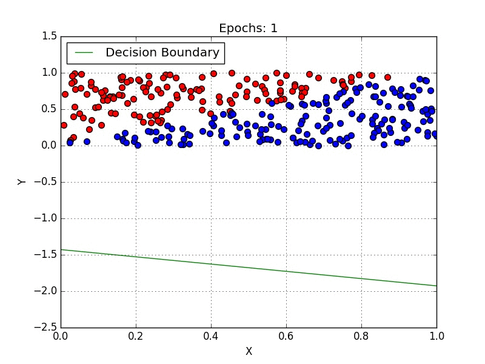
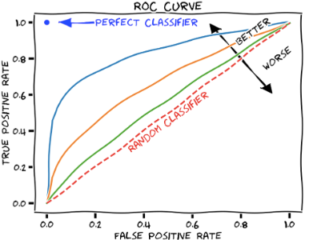

v.
Overview
- Focus on classification problem
- Discuss the performance measurement for classification
Classification
From Regression to Classification
- Regression: continuous label values
- Tomorrow's highest temperature?
- Students' final marks for a module?
- What if the label/output is discrete?
- Is is a cat? (
TrueorFalse) - What is the genre of the song? (pop or jazz or metal)
- Regression $\implies$ Classification
- Binary Classification or Multi-class Classification
Classification Example (Recall)
Classification is for when the data is categorical (object type, activity, etc...)
We're essentially sorting the data into 'regions'
e.g. text categorisation, face detection, object recognition, quality control, ...
Classification Scenarios
Recognising the type of situation you are in right now is a basic agent task:
- Robotics: misidentifying a human body with some part of a car on the assembly line would be disastrous
- Military: friend or enemy?
- Financial transactions: was it a fraud or normal transaction?
- Plant recognition: which plant in the picture?
- ...
Classification Approaches
- Top-down: breaking down the task into smaller, more manageable steps, gradually building towards a complete solution
- inspiration from higher abstraction levels
- Bottom-up: starting with individual components and gradually building a comprehensive classification solution
- inspiration from biology, e.g. neural networks
Binary Classification
- There are only 2 labels: yes/no, 1/0, green/red, etc...
- Example: spam filter, fraud detection, ...
- MNIST dataset Contains 70,000 small images of digits
Handwritten by high school students and employees of $\qquad\qquad\qquad\quad$
the US census Bureau
e.g. Is it digit 2? (
yes or no)
Model Measurement
- Labels are categorised - non-continuous
- Error is a little bit harder to define - not as easy as '$a-b$'
- There isn't a distance between the predicted label and true label
- e.g. how far is a 'flower' from a 'car'?
- Number of correct guesses can be used as the measurement
Performance
- Goal: measure the goodness of the ML model
- Standard performance metrics:
- Root Mean Square Error (RMSE): $$RMSE(X, h)=\sqrt{\frac{1}{m}\sum_{i=1}^{m}\big( h(x^{(i)})-y^{(i)} \big)^2}$$
- Mean Absolute Error (MAE): $$MAE(X, h) = \frac{1}{m}\sum_{i=1}^{m}\vert h(x^{(i)})-y^{(i)} \vert$$
Performance (2)
- Standard performance metrics:
- Root Mean Square Error (RMSE): $RMSE(X, h)=\sqrt{\frac{1}{m}\sum_{i=1}^{m}\big( h(x^{(i)})-y^{(i)} \big)^2}$
- Mean Absolute Error (MAE): $MAE(X, h) = \frac{1}{m}\sum_{i=1}^{m}\vert h(x^{(i)})-y^{(i)} \vert$
- The small the error, the more accurate
-
RMSE andMAE are typically used in regression models (will cover this later) - For classification, we use other (simple) functions
- e.g. Number of correct guesses: simply enough to implement, refer to this as accuracy
Accuracy as Performance Metric
- Example: Predicting whether an asthma attack will follow a coughing episode
- $99\%$ cases: no attack after coughing
- $1\%$ cases: asthma attack
- If we design a fancy ML algorithm for the prediction, we get $99\%$ accuracy
- Is this good enough? Why?
Accuracy as Performance Metric (2)
- Example: Predicting whether an asthma attack will follow a coughing episode
- $99\%$ cases: no attack after coughing
- $1\%$ cases: asthma attack
- Think about this: a very dumb algorithm - always says NO
- What's the accuracy of this algorithm? $99\%(!!!)$
- What's the reason behind this?
- Answer: imbalanced (skewed) dataset
Accuracy as Performance Metric (3)
- Accuracy is not a good performance metric for classifiers!
- What we need is a new technique which can capture misclassification separately for each class instead of showing the aggregated accuracy
- This is very important especially in training with imbalanced dataset
Confusion Matrix
- Example: classify whether the given digit is 5 $\qquad\qquad\qquad\qquad\quad$
- True Position (TP):
- YES data correctly predicted as YES
- True Negative (TN):
- NO data correctly predicted as NO
- False Positive (FP):
- NO data incorrectly predicted as YES (Type I error)
- False Negative (FN):
- YES data incorrectly predicted as NO (Type II error)
Precision-Recall Rate
- With $TP$, $TN$, $FP$, and $FN$ defined as previous $\qquad\qquad\qquad\qquad\qquad$
slide, we have: - Precision rate: $\frac{TP}{TP+FP}$
- ratio of correct ones among YES predictions
- Recall rate: $\frac{TP}{TP+FN}$
- ratio of YES among correct predictions
Precision-Recall Rate (2)
- Example: Predicting whether an asthma attack will follow a coughing episode
- $99\%$ cases: no attack after coughing
- $1\%$ cases: asthma attack
- The dumb algorithm always says NO
- $TP = 0; TN = 0.99; FP = 0; FN = 0.1$
- Precision: $\frac{TP}{TP+FP}=\frac{0}{0+0}=$ $NaN$
- Recall: $\frac{TP}{TP+FN}=\frac{0}{0+0.1}=$ $0$
| Confusion Matrix |
Predicted | |||
| Negative | Positive | |||
|
Actual$\qquad$
|
Negative |
True Negative (TN) |
False Positive (FP) |
|
Positive |
False Negative (FN) |
True Positive (TP) |
||
F-Score (F1 Score)
$F_1=\frac{2}{\frac{1}{precision}+\frac{1}{recall}}=2\times \frac{precision\times recall}{precision+recall}=\frac{TP}{TP+\frac{FN+FP}{2}}$
- Captures both precision and recall in a concise way
- F1 score is the harmonic mean of the 2 values: $\frac{TP}{TP+FP}$(precision) and $\frac{TP}{TP+FN}$(recall)
- F1 is high only if both values are (similarly) high
- Not always good, as we might only care about 1 value
- Example 1: children friendly video detection - prefer to reject many good videos (low recall) but keeps only safe ones (high precision)
- Example 2: detect shoplifters on surveillance images - it's fine to have only 40% precision as long as it has 99% recall (i.e. we allow false alerts, but we want almost all shoplifters to be caught)
Precision/Recall Trade-Off
Unfortunately, we can’t have both precision and recall high. If you increase precision, it will reduce recall, and vice versa.
some classifiers use a decision function with a threshold

Precision/Recall Trade-Off (2)
Another way to select a good precision/recall trade-off is to plot precision against recall directly
For example: a good precision/recall combination would be $\big(~80\%,~80\%\big)$
ROC Curve
- Receiver Operating Characteristic (ROC) curve: another common tool used with binary classifier, it's vary similar to the precision/recall curve
- Plot True Positive Rate (TPR, actually it's recall, a.k.a span.skyblue sensitivity) against the False Positive Rate (FPR) rather than precision against recall
- FPR is the ratio of negative data incorrectly classified as positive, hence $FPR=1-TNR$
- TNR (True Negative Rate) is the ratio of negative data correctly classified as negative, also known as specificity
- ROC curve plots: sensitivity (recall) versus 1-specificity
TPR, TNR, FPR, FNR
- True Positive Rate: TPR, sensitivity, recall, hit-rate
- $TPR = \frac{TP}{P} = \frac{TP}{TP+FN}$
- True Negative Rate: TNR, specificity, selectivity
- $TNR = \frac{TN}{N} = \frac{TN}{TN+FP}$
- False Positive Rate: Type I error, false-alarm
- $FPR = \frac{FP}{N} = \frac{FP}{TN+FP}$
- False Negative Rate: Type II error, miss-rate
- $FNR = \frac{FN}{P} = \frac{FN}{TP+FN}$
ROC plots: TPR vs. FPR
ROC Curve: Example
Compare Classifiers
- Measure the area under the ROC (AUC)
- A perfect classifier will have a
ROC where $AUC=1$ - A purely random classifier will
have a ROC where $AUC=0.5$ - ? - Recall: $TPR = \frac{TP}{P} = \frac{TP}{TP+FN}$ and
$FPR = \frac{FP}{N} = \frac{FP}{TN+FP}$ - e.g. if the random classifier predict positive with a probability of $\rho$
$TPR = \frac{TP}{P} = \frac{\rho P}{P} = \rho$ and $FPR = \frac{FP}{N} = \frac{\rho N}{N} = \rho$
Compare Classifiers: Example
$\qquad\qquad\qquad\qquad\qquad\qquad\qquad$Model A is the best among A, B, and C
Can we do better?
Mirror C across (0.5,0.5) to get a new model
Multi-class Classification
- More than 2 labels (e.g., digits from 0-9)
- Some classifiers can handle multiple classes by default (e.g. random forest, naive Bayes)
- Others require non-trivial modifications (e.g. SVM)
- One-versus-All (OvA) strategy: use multiple binary classifiers, one for each class, choose the one with highest decision score
- One-versus-One (OvO) strategy: one binary classifier for each pair of classes, choose the one with highest average decision score
- more computations, but easier to scale with large training sets
Other Classification Types
- Multi-label classification: assign multiple labels to data
- Example: face recognition in pictures - can be more than 1 person
- Not all classifiers can support multi-label classification
- Multi-output classification: the model will give two or more outputs after making any prediction
- Example: predicts the type and color of fruit simultaneously
Summary
- Classification Problem
- Performance Measurement
- More classification types
Questions?